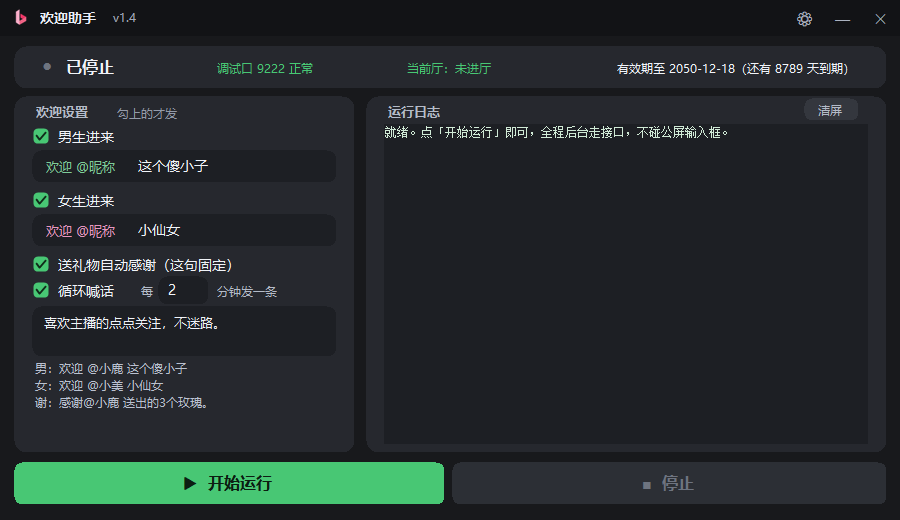

迎
欢迎机器人 v1.3
进厅就欢迎 · 送礼就感谢 · 还能定时喊话
李太阳 ☀ 出品
人一进来就喊上名，礼物一到就道谢，男生女生两套词各写各的。还能按分钟循环喊话，一晚上不用你管，情绪价值拉满。

主界面：左边写文案和开关，右边看日志
怎么用
- 打开后如果弹卡密窗，把卡密粘进去点激活，自动绑这台电脑，不用你报机器码。
- 男生、女生两个框各写半句。前面
欢迎 @昵称 是软件固定的，你只写后面那几个字。
- 勾上送礼物感谢，会自动谢成：
感谢@昵称 送出的N个礼物。
- 想循环喊话就勾上，填隔几分钟一条，文案写在下面的框里。
- 点 ▶ 开始运行。改文案、改开关不用保存、不用重启，2 秒内自动生效。
几个你会用到的
- 同一个人给 7 个主播各送 1 个，会合成一条「感谢@xx 送出的7个礼物」。
- 平台同一次送礼会发两条广播，软件自动认出来，只谢一次。
- 一个人进来几次就欢迎几次，不记忆、不去重。
- 右上 ⚙ 设置 里可以改关闭方式：最小化到托盘 / 直接退出，能记住你的选择。
- 状态条最右边是有效期，剩 3 天以内会变红色提醒。
- 卡密是欢迎机器人专用的，另外两个软件的卡不能通用。
三个软件可以同时开
作业助手、自动爆灯、欢迎机器人 互不冲突，可以一起运行。三个同时挂着也没问题，各干各的。
首次启动会重启你的开播助手
第一次点「开始运行」时如果调试口没开，软件会自动找到你的开播助手、关掉它、再带调试口重新打开。这期间不要手动去点开播助手，等它自己起来。
重启会断开当前直播，开播要重新点一次。
首次启动慢是正常的
第一次要连调试口、初始化组件，等 10~30 秒都属于正常。别以为卡死了去反复点，第二次以后就快了。
免责声明：本软件仅供个人娱乐、学习交流使用，禁止任何商业用途、禁止转卖倒卖。
使用前请自行了解并遵守所在平台规则，因使用本软件产生的任何后果由使用者自行承担。
李太阳 ☀ · 语音厅工具站